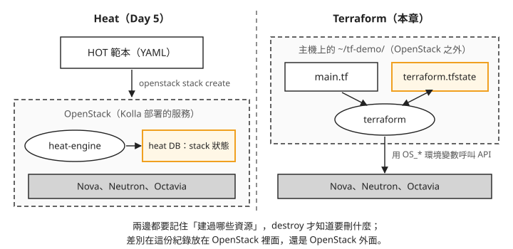
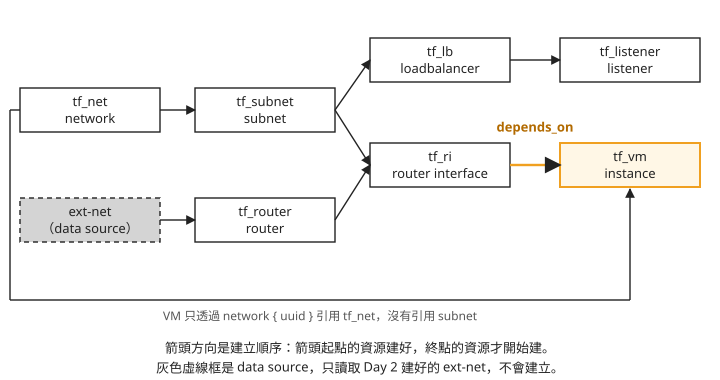
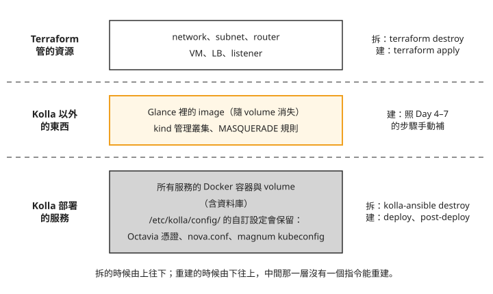

Day 10: 用 Terraform 建立與拆除 OpenStack 資源——provider、state、depends_on 與 kolla-ansible destroy¶
Day 2 開第一台 VM 時,network、subnet、router、VM 是一行一行 openstack ... create 建出來的。如果明天要替另一個專案再建一套一樣的環境,或做完實驗想全部清掉,只能翻筆記照順序重打,刪的時候還得倒過來刪。Day 5 的 Heat 可以用一份範本一次建好,但範本建出來的紀錄存在這朵雲自己的資料庫裡,雲一拆,紀錄也跟著消失。
這一章用 Terraform 把一組 network、VM 和負載平衡器寫成一個檔案,建立、查看、一次拆掉;再整理把整朵 OpenStack 拆掉重建時要做哪些事。讀完之後,拿到一套環境,你能判斷拆掉之後各部分靠什麼重建:哪些 terraform apply 就能回來,哪些要重跑 Kolla,哪些只能照前幾章的步驟手動補。
Terraform 把狀態記在雲的外面¶
Terraform 是 HashiCorp 的工具:你在一個文字檔裡描述想要哪些資源,它負責呼叫 API 把資源建出來,事後也能照同一份描述把它們刪掉。描述檔用的語言叫 HCL(HashiCorp Configuration Language),副檔名是 .tf。
Heat 和 Terraform 都是「寫範本、一次建好」,最大的差別在於「建過哪些資源」這份紀錄放在哪裡。下面這張圖把兩者並排:

圖上標成橘色的兩個框,就是這份紀錄。我們可以看到兩件事:
- Heat 的紀錄在 OpenStack 裡面。 Day 5 建的 stack,狀態存在 heat 的資料庫,跟其他服務的資料庫一起由 Kolla 部署。
- Terraform 的紀錄在 OpenStack 外面。 它是你工作目錄裡的一個檔案
terraform.tfstate,這個檔案叫 state。Terraform 靠它知道自己建過哪些資源、各自的 ID 是什麼,之後要刪的時候就照這份紀錄逐一刪除。
另一個差別是範圍:Heat 只管 OpenStack,Terraform 透過不同的 provider(下一節會講)可以在同一份描述裡同時管 OpenStack、其他公有雲和 DNS 這類外部服務。
步驟 1:安裝 terraform¶
在 OpenStack 主機上安裝。下面先向 HashiCorp 查目前的最新版號,下載對應的 zip,解壓後放進 /usr/local/bin:
VER=$(curl -s https://checkpoint-api.hashicorp.com/v1/check/terraform | python3 -c "import sys,json;print(json.load(sys.stdin)['current_version'])")
curl -fsSLo /tmp/tf.zip "https://releases.hashicorp.com/terraform/${VER}/terraform_${VER}_linux_amd64.zip"
python3 -c "import zipfile; zipfile.ZipFile('/tmp/tf.zip').extractall('/tmp')"
sudo install -m0755 /tmp/terraform /usr/local/bin/terraform # v1.15.8
解壓用的是 Python 內建的 zipfile,所以主機上不必另外裝 unzip。行尾的版號是本課安裝時拿到的版本,你裝到的可能更新。
步驟 2:把資源寫成 main.tf¶
建一個目錄 ~/tf-demo/,把下面的內容存成 ~/tf-demo/main.tf。先整份看過,接著逐段說明:
terraform {
required_providers {
openstack = { source = "terraform-provider-openstack/openstack", version = "~> 3.0" }
}
}
provider "openstack" {} # 讀 OS_* env
data "openstack_networking_network_v2" "extnet" { name = "ext-net" }
resource "openstack_networking_network_v2" "tf_net" { name = "tf-net" }
resource "openstack_networking_subnet_v2" "tf_subnet" {
name = "tf-subnet"
network_id = openstack_networking_network_v2.tf_net.id
cidr = "10.20.0.0/24"
ip_version = 4
dns_nameservers = ["8.8.8.8"]
}
resource "openstack_networking_router_v2" "tf_router" {
name = "tf-router"
admin_state_up = true
external_network_id = data.openstack_networking_network_v2.extnet.id
}
resource "openstack_networking_router_interface_v2" "tf_ri" {
router_id = openstack_networking_router_v2.tf_router.id
subnet_id = openstack_networking_subnet_v2.tf_subnet.id
}
resource "openstack_compute_instance_v2" "tf_vm" {
name = "tf-vm"
depends_on = [openstack_networking_router_interface_v2.tf_ri]
image_name = "cirros"
flavor_name = "m1.tiny"
key_pair = "k8s-admin"
network { uuid = openstack_networking_network_v2.tf_net.id }
}
resource "openstack_lb_loadbalancer_v2" "tf_lb" {
name = "tf-lb"
vip_subnet_id = openstack_networking_subnet_v2.tf_subnet.id
loadbalancer_provider = "amphora"
}
resource "openstack_lb_listener_v2" "tf_listener" {
name = "tf-listener"
protocol = "HTTP"
protocol_port = 80
loadbalancer_id = openstack_lb_loadbalancer_v2.tf_lb.id
}
output "tf_vm_ip" { value = openstack_compute_instance_v2.tf_vm.access_ip_v4 }
output "tf_lb_vip" { value = openstack_lb_loadbalancer_v2.tf_lb.vip_address }
provider:Terraform 怎麼連到這朵雲¶
開頭的 terraform { required_providers ... } 宣告這份檔案要用哪個 provider。Terraform 本身不認得 OpenStack,呼叫 OpenStack API 的工作由 provider 這個外掛負責;這裡用的是社群維護的 terraform-provider-openstack/openstack,~> 3.0 表示接受 3.x 的任何版本。
provider "openstack" {} 是空的,裡面沒有帳號密碼。provider 會改讀環境變數 OS_AUTH_URL、OS_USERNAME、OS_PASSWORD、OS_PROJECT_NAME 和網域相關的 OS_*_DOMAIN_NAME,也就是 Day 1 admin-openrc.sh 設定的那一組。所以帳密不必寫進 HCL,只要執行前先 source 憑證檔。要給多個環境或自動化流程用時,provider 也支援用 cloud = "..." 指向 clouds.yaml 裡的一個項目,或改用 application credential,不必拿管理員密碼。
resource 和 data source¶
檔案裡的區塊分成兩種:
resource是要 Terraform 建立並管理的東西,這裡有七個:network、subnet、router、router interface(把 subnet 接上 router)、VM、負載平衡器、listener。data是 data source,只讀取一個已經存在的資源,不建立、也不會刪除。ext-net是 Day 2 建的對外網路,這朵雲的其他東西也在用它,所以只用 data source 查出它的 ID,交給 router 當對外閘道。
一個區塊可以引用另一個區塊的屬性,例如 subnet 的 network_id = openstack_networking_network_v2.tf_net.id。Terraform 從這些引用推出資源之間的相依:subnet 引用了 network,就要等 network 建好才能建 subnet。彼此沒有引用關係的資源,Terraform 會同時建立。
為什麼 VM 要加 depends_on¶
把這七個資源的引用關係畫成圖,箭頭方向就是建立順序:

先看底部那條繞過整張圖的線。VM 的 network { uuid = ... } 只引用了 network,沒有引用 subnet,所以單看引用關係,Terraform 只知道 VM 要等 network 建好。network 一建好,VM 和 subnet 就會同時開始建。VM 送到 Nova 的時候 subnet 可能還沒建好,Nova 會拒絕:這個 network 上沒有 subnet,沒辦法分 IP 給 VM。
VM 需要 subnet,但 HCL 裡沒有任何一行把這件事寫出來,Terraform 也就推不出來。這種情況要用 depends_on 明確告訴 Terraform 順序。圖上那條橘色箭頭就是 depends_on = [openstack_networking_router_interface_v2.tf_ri]:router interface 本身引用了 subnet 和 router,等它建好時,subnet 已經存在,也已經接上 router,這時再建 VM。只寫 depends_on = [openstack_networking_subnet_v2.tf_subnet] 也能解決 subnet 的問題。漏掉這一行會看到什麼錯誤,見疑難排解：VM 建立失敗,Nova 回 400。
負載平衡器與 output¶
負載平衡器明確指定 loadbalancer_provider = "amphora"。Day 4 提過,這朵雲的 Octavia 有 amphora 和 ovn 兩個 provider,ovn provider 只處理 TCP、UDP 這類 L4 流量;這裡的 listener 用的是 HTTP,所以要指定 amphora,由 Octavia 開一台跑 haproxy 的 amphora VM 來處理。
最後兩個 output 區塊,讓 Terraform 建完之後印出 VM 的 IP 和負載平衡器的 VIP(對外服務用的那個 IP),不必再用 openstack 指令去查。
步驟 3:plan、apply、確認、destroy¶
在 ~/tf-demo/ 目錄裡依序執行:
source /etc/kolla/admin-openrc.sh
terraform init
terraform plan # 7 to add
terraform apply -auto-approve
terraform output # tf_vm_ip / tf_lb_vip
terraform destroy -auto-approve # 一鍵拆 7 資源(含 amphora)
一行一行看:
terraform init照required_providers下載 OpenStack provider,放進目錄裡的.terraform/。每個新目錄只要做一次。terraform plan比對 HCL、state 和雲上的現況,列出接下來要建立、修改或刪除什麼,但不會真的動手。第一次執行時 state 還是空的,所以結果是7 to add:正好是七個resource。ext-net是 data source,不在其中。先看 plan 再動手,是 Terraform 最常用的習慣:改了 HCL 之後,plan 會告訴你這次改動會不會把某個資源刪掉重建。terraform apply真正呼叫 API 建立資源,完成後把每個資源的 ID 寫進terraform.tfstate。平常 apply 會先印出 plan 並等你輸入yes;-auto-approve省略這個確認,只適合在你已經看過 plan 的時候用。七個資源裡最慢的是負載平衡器,約一分鐘,因為要等 Octavia 開好 amphora VM;VM 約 20 秒。terraform output印出兩個 output 的值。本課執行時拿到的是tf_vm_ip10.20.0.46、tf_lb_vip10.20.0.234,兩個 IP 都落在 HCL 裡 subnet 設定的10.20.0.0/24;你的數字會不同,但應該也在這個範圍內。
destroy 之前,可以先用 openstack server list、openstack network list、openstack loadbalancer list 看看,名稱是 tf- 開頭的資源都在。amphora VM 建在 Octavia 自己的 service project 裡,openstack server list 列不到,要用 openstack loadbalancer amphora list 看。
terraform destroy照 state 裡的紀錄,依相依關係的反方向刪除:listener 先於負載平衡器、VM 先於 router interface,最後才刪 network。刪除負載平衡器時,Octavia 會把它的 amphora VM 一起刪掉。
destroy 跑完再列一次,tf- 開頭的資源應該全部不見,openstack loadbalancer amphora list 裡也不再有這個負載平衡器的 amphora。這一步確認的是:Terraform 建的東西,它都能自己收回去,不會在 OpenStack 留下殘留。
拆掉整朵 OpenStack 要做什麼¶
terraform destroy 拆的只是建在 OpenStack 上面的資源。如果要把 OpenStack 本身拆掉重建,例如換一台主機、或者環境壞到不值得修,要用的是 Kolla-Ansible 的 kolla-ansible destroy:它把 Kolla 部署的所有容器和 Docker volume 清掉,資料庫的資料和上傳到 Glance 的 image 都存在 Docker volume 裡,所以一併消失,無法復原。主機上的 /etc/kolla/ 則是部分保留:globals.yml、passwords.yml 和自訂設定目錄 config/ 會留下,其餘產生出來的檔案會被刪掉,包括 Day 1 post-deploy 產生的 admin-openrc.sh。
這一段本課沒有實際執行。下面的程序是把前幾章的手動步驟整理成的清單,沒有從頭到尾跑過一次;重建需要的時間也只是估計。
清單分四段:先備份設定,再拆,再用 Kolla 重新部署,最後補上 Kolla 管不到的東西。第 3 段的註解是一串提醒,各自對應前面某一章的步驟:CAPI mgmt cluster 是 Day 6 用 kind 建的 Cluster API 管理叢集,ORC 是它呼叫 OpenStack API 用的元件;o-hm0 是 Day 4 讓 Octavia 連到 amphora 管理網路的介面。
# 0. 先備份會遺失的狀態(node image 已在 Glance repo 外、magnum kubeconfig、globals.yml)
cp /etc/kolla/globals.yml ~/globals.backup.yml
# 1. 拆整套 OpenStack(清所有容器 + volumes + 資料;不可逆)
kolla-ansible destroy -i ~/all-in-one --yes-i-really-really-mean-it
# 2. 重建(~30-60 分,依服務數)
kolla-ansible bootstrap-servers -i ~/all-in-one # 若 host 也被清
kolla-ansible deploy -i ~/all-in-one # core + octavia + barbican + magnum
# 3. 重建後必做的 post-steps(這些不在 kolla deploy 範圍內):
# - Octavia 憑證: kolla-ansible octavia-certificates -i ~/all-in-one(Day 4)
# - 重傳 amphora / node image 到 Glance(Day 4/7)
# - 重建 CAPI mgmt cluster(kind + clusterctl init + ORC,Day 6)——kind 資料不隨 kolla 走
# - magnum kubeconfig 換新 kind API port,重放 /etc/kolla/config/magnum/kubeconfig(Day 7)
# - kind MASQUERADE / octavia o-hm0 / disk_allocation_ratio 等 host 級設定(有 systemd unit / config 的會自動回)
--yes-i-really-really-mean-it 是 kolla-ansible destroy 要求的確認參數,少了它不會執行。destroy 會保留 globals.yml、passwords.yml 和 config/,但拆除前把它們另外複製一份仍然值得,萬一要換一台主機重建,這幾個檔案就是全部的設定。
deploy 跑完之後,admin-openrc.sh 已經在拆除時被刪掉,要先重新產生,才能 source 它、執行 openstack 或 terraform 指令:
第 3 段那串 post-steps 要分成兩類看。放在 /etc/kolla/config/ 底下的東西,destroy 會保留,deploy 重跑時自動帶回:Day 4 產生的 Octavia 憑證、Day 9 調整 disk_allocation_ratio 的 nova.conf、Day 7 交給 Magnum 的 kubeconfig 檔案。其中 kubeconfig 只有在 kind 叢集也重建、API port 換了的時候,才需要換成新內容。
真正要手動補的是 Kolla 以外的東西:Day 4 和 Day 7 上傳的 amphora image 與 Kubernetes 節點 image(它們在 Glance 的 Docker volume 裡,跟著消失)、Day 6 用 kind 建的管理叢集,以及 Day 6 讓 kind 節點連得到外網的 MASQUERADE 規則。
把拆除和重建按層次畫出來:

照著圖由下往上看重建的順序:
- 最下層有現成的指令。
kolla-ansible deploy是冪等的(Day 1),設定都在保留下來的globals.yml和config/裡,重跑就能把服務帶回來,再用post-deploy產生憑證檔。 - 最上層也有。 只要
main.tf還在,terraform apply就能把這一層建回來。但要等下面兩層都就緒:Glance 裡還沒有 amphora image,負載平衡器就建不起來。 - 中間那一層只有筆記。 這些資料和設定散在 Day 4 到 Day 7 的步驟裡,沒有一個指令能一次重建。
所以「能不能一次拆掉、一次重建」,取決於中間那一層有沒有也寫成程式。這一層可以用 Ansible 劇本或 Terraform 補上,這門課沒有做。
疑難排解¶
VM 建立失敗,Nova 回 400¶
症狀:terraform apply 建 VM 時失敗,錯誤訊息是 Network ... requires a subnet in order to boot instances on(HTTP 400)。
原因:VM 只引用了 network,沒有引用 subnet,Terraform 把 VM 和 subnet 同時建,VM 送到 Nova 時 subnet 還沒建好。詳細的說明和修法見步驟 2「為什麼 VM 要加 depends_on」:在 VM 加上 depends_on,指向 router interface 或 subnet。
想一想¶
- 一位同學覺得
depends_on那行多餘,把它刪掉之後 apply 了三次:兩次成功、一次在 VM 那一步失敗。為什麼結果會不一樣? - 另一位同學做完實驗,把整個
~/tf-demo/目錄刪掉了,才想起資源還沒清。他重新寫了一份一模一樣的main.tf,在新目錄裡執行terraform destroy,能把舊的那七個資源刪掉嗎?為什麼? - 主管問你:「我們的網路和 VM 都寫成 Terraform 了,這朵雲哪天壞了,是不是
terraform apply就能全部建回來?」你會怎麼回答,還需要準備什麼?
小結¶
Terraform 用 HCL 描述想要的資源,透過 provider 呼叫 OpenStack API,並把建過的資源記在雲外的 state 檔案裡;plan 先列出差異,apply 照著建,destroy 照 state 刪乾淨。資源之間的順序靠引用推導,HCL 裡沒寫出來的需求,例如 VM 需要 subnet,要用 depends_on 補上。之後判斷一套環境能不能重建時,把它分成三層看:Terraform 管的資源、Kolla 部署的服務,以及 Kolla 以外、只存在於前幾章步驟裡的 image、kind 叢集和主機設定。最後這一層沒有寫成程式之前,拆掉整朵雲就要照筆記一件件補回來。
延伸閱讀¶
想再深入,可以從這幾份開始:
- Terraform OpenStack Provider 文件 —— 每種資源(instance、network、loadbalancer)的完整參數,以及 provider 支援的各種認證方式。
- Terraform 官方入門 —— state、plan、apply 的第一手說明。
- Terraform:depends_on —— 官方說明什麼時候 Terraform 推不出相依、為什麼建議把
depends_on當最後手段。 - Kolla-Ansible 維運指南 ——
destroy、reconfigure、升級這些日常操作的官方說明。
下一步¶
Sprint 3 的動手部分到這裡結束:從一台空的 Azure VM 開始,部署了 OpenStack,一路做到在上面開 Kubernetes 叢集,最後用 Terraform 管理資源。Day 11 不用動手,把這十天用過與沒用過的 OpenStack 服務放在一張圖上;回顧與產業對照見 Sprint 3 回顧。
Terraform 標誌為 HashiCorp 之商標,此處作社群教學用途。